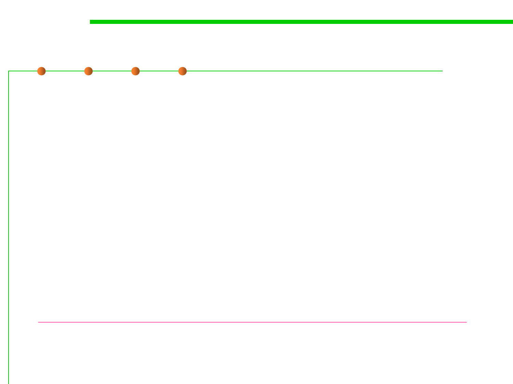

8.2 Dynamic Program Analysis Methods and Tools
Ways to generate a java heap dump
▪ A heap dump is a snapshot of the complete Java object graph on a
Java application at a certain point in time. It is stored in a binary
format called HPROF.
▪ Use jmap -dump option to obtain a heap dump at runtime;
▪ Use jconsole option to obtain a heap dump via
HotSpotDiagnosticMXBean at runtime;
▪ Heap dump will be generated when OutOfMemoryError is thrown
by specifying -XX:+HeapDumpOnOutOfMemoryError VM option;
▪ Use hprof, a heap/CPU profiling tool
http://docs.oracle.com/javase/8/docs/technotes/samples/hprof.html